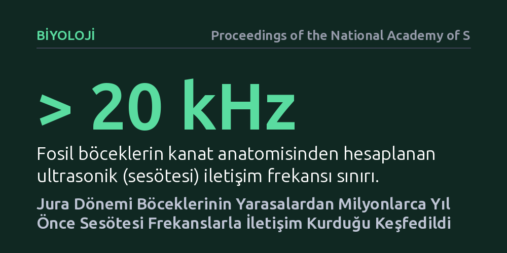

BIYOLOJI · Proceedings of the National Academy of Sciences · 2026-09-11
Araştırmacılar, iyi korunmuş Jura dönemi böcek fosillerinin ses üreten kanat anatomisini inceleyerek antik ormanların akustik ortamını modelledi. Bulgular, bu canlıların yarasalardan milyonlarca yıl önce avcılardan gizlenmek ve eşleşmek amacıyla sesötesi frekanslarla iletişim kurduğunu kanıtladı.
Sesötesi iletişimin yalnızca yarasaların ortaya çıkışıyla tetiklenen bir savunma adaptasyonu olduğu kabulünü yıkarak, bu yeteneğin Mezozoik ormanlarında çok daha önce evrimleştiğini gösteriyor.

Dinozorların hüküm sürdüğü Jura dönemi ormanlarını hayal ettiğimizde zihnimizde dev sürüngenlerin kükremeleri canlansa da o dönemin gerçek ses ortamı hakkında çok az şey biliyoruz. Çünkü dinozorlar ve diğer omurgalıların gırtlak veya ses telleri gibi yumuşak dokulu ses organları fosilleşmez ve geride iz bırakmadan yok olur. Bu durum, yüz milyonlarca yıl önceki ekosistemlerin nasıl bir akustik manzaraya sahip olduğu sorusunu paleontolojinin en zorlu gizemlerinden biri haline getirmiştir.
Neyse ki ses dünyasını aydınlatmanın başka bir yolu var. Omurgalıların aksine, çekirgeler ve akrabaları gibi eklem bacaklıların ses üreten mekanizmaları sert kütikula tabakasından oluşur ve uygun koşullarda taşlaşarak günümüze ulaşabilir. Jura dönemi ormanlarının akustik yapısını anlamak, yalnızca bu canlıların nasıl ses çıkardığını değil; av-avcı ilişkilerinin, cinsel seçilimin ve dönemin ekosistemlerinin nasıl evrimleştiğini kavramak açısından da büyük önem taşır.
Araştırmacılar, geçmişin sessizliğini aralamak için Jura döneminden kalma kayaçlarda çok iyi korunmuş fosil çekirge kanatlarını mercek altına aldı. Modern akrabalarında olduğu gibi, bu canlıların kanatlarında da birbirine sürtülerek ses çıkarmaya yarayan dişli bir törpü ve sesi yükselten zarımsı rezonatör pencereleri bulunuyordu. Araştırma ekibi, bu mikroskobik kanat yapılarını yüksek çözünürlüklü görüntüleme teknikleriyle haritalandırarak diş sayısı, diş aralıkları ve rezonatör alanlarını hassas biçimde ölçtü.
Elde edilen ayrıntılı morfolojik veriler, günümüz böceklerinin kanat fiziğiyle kalibre edilmiş biyomekanik ve akustik simülasyon modellerine aktarıldı. Bilgisayar ortamında kanadın sürtünme hızı, elastikiyeti ve rezonans frekansları hesaplanarak Jura dönemi böceğinin kanatlarını birbirine sürttüğünde hangi perdede ses çıkaracağı matematiksel olarak yeniden üretildi. Böylece milyonlarca yıl önce yaşamış bir canlının çağrısı laboratuvar ortamında somut bir veriye dönüştürüldü.
Biyomekanik modellemeler beklenmedik bir gerçeği ortaya çıkardı: Bu kadim böcekler, insan kulağının duyma sınırının çok üzerinde, yani sesötesi frekanslarda iletişim kuruyordu. Fosillerdeki kanat törpüsünün sıkı diş dizilimi ve rezonatör bölgesinin mekanik yapısı, modern çalı çekirgelerinin yüksek frekanslı çağrılarına çarpıcı bir benzerlik gösteriyordu. Bu durum, Jura ormanlarında sadece işitilebilir cırcır seslerinin değil, insan kulağına tamamen sessiz gelen zengin bir sesötesi iletişim ağının da var olduğunu gösterdi.
İncelemeler ayrıca, bu sesötesi sinyallerin kısa mesafede oldukça net ve yönlü bir iletişim sağladığını ortaya koydu. Yüksek frekanslı ses dalgaları yoğun bitki örtüsü arasında hızla sönümlendiği için, çağrıyı yapan böcek hem yakınındaki eş adaylarına yerini bildirebiliyor hem de uzak mesafedeki olası yırtıcıların dikkatini çekmekten kaçınabiliyordu. Böylece Mezozoik ormanlarında, dönemin büyük avcılarının fark edemediği gizli bir akustik kanalın işlediği anlaşıldı.
Evrimsel biyolojide uzun yıllardır kabul gören yaygın bir hipotez vardı: Böceklerde sesötesi iletişimin ve bunu algılayan kulakların, yarasaların yankıyla avlanma baskısına karşı bir savunma mekanizması olarak evrimleştiği düşünülüyordu. Ancak yarasaların fosil kayıtları ve moleküler kökenleri yaklaşık 50 ila 65 milyon yıl öncesine, yani dinozorların yok oluşundan sonrasına uzanmaktadır. Bu çalışma ise sesötesi iletişimin yarasaların ortaya çıkışından en az 100 milyon yıl önce, Jura döneminde zaten var olduğunu göstererek bu klasik senaryoyu sarstı.
Elde edilen bulgular, böceklerdeki yüksek frekanslı ses kullanımının ilk olarak gece avlanan ilkel memelilerden veya sürüngenlerden gizlenmek ya da yoğun orman gürültüsünü aşarak tür içi iletişimi güvene almak amacıyla evrimleştiğine işaret ediyor. Kısacası ultrasonik iletişim, yarasalara karşı sonradan geliştirilmiş bir tepki değil; Mezozoik dünyasının ekolojik baskıları altında çok daha erken dönemde şekillenmiş köklü bir adaptasyondur.